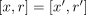
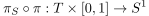

projection from the mapping torus to S1
1. Proposition
Let  be a topological space,
be a topological space,  a homeomorphism and the mapping torus.
Then there exists a continuous map
a homeomorphism and the mapping torus.
Then there exists a continuous map
2. Proof
2.1. welldefined
Suppose .
Then by assumption,  and hence
and hence
2.2. continuous
By definition of a quotient topology as final topology, a map is continuous if and only if

is continuous
but is continuous